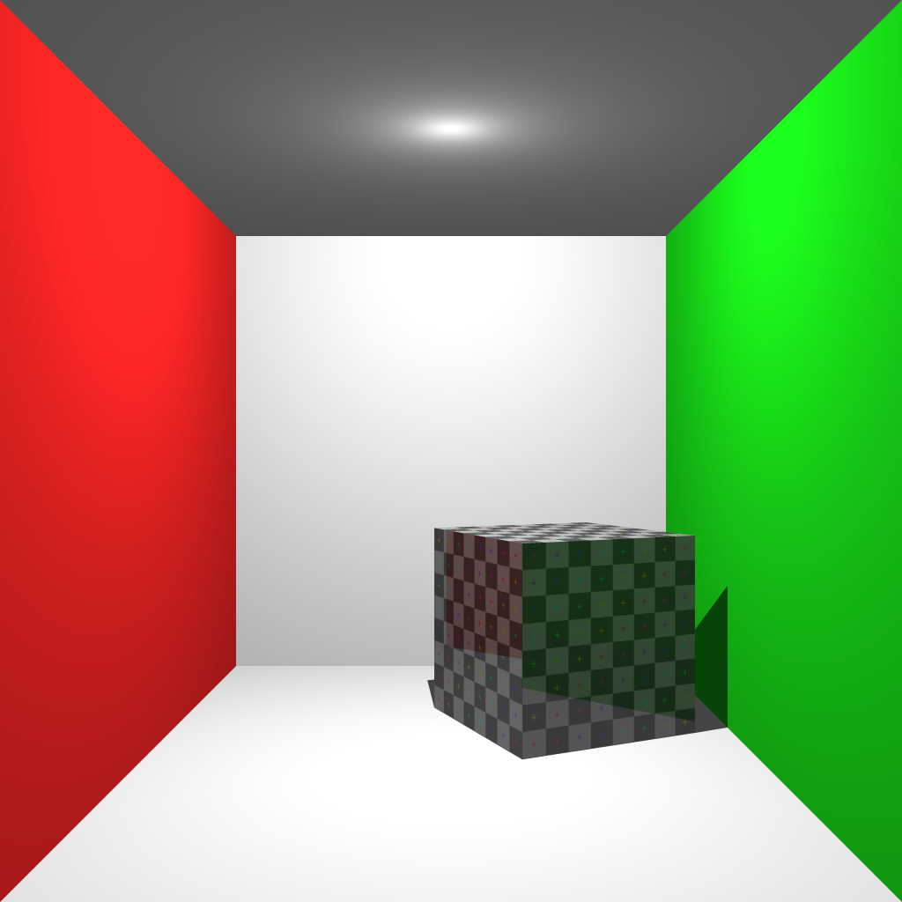
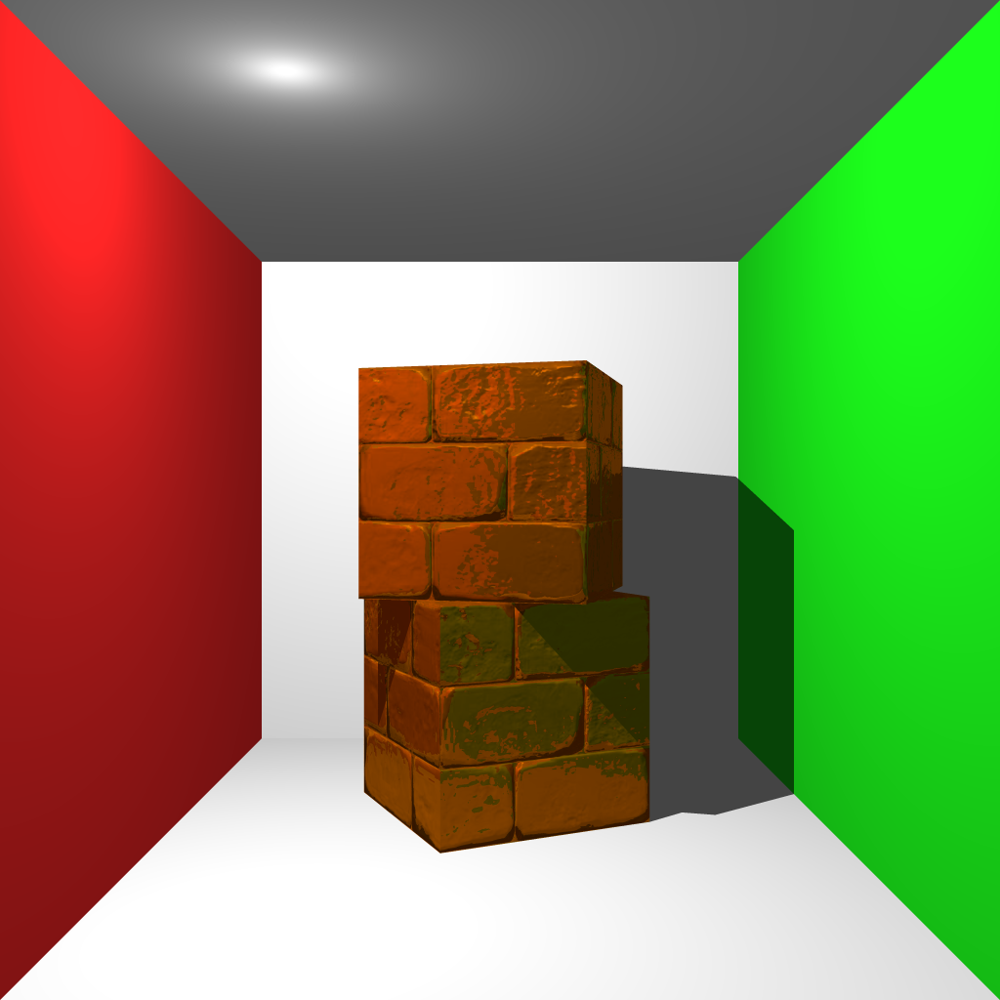
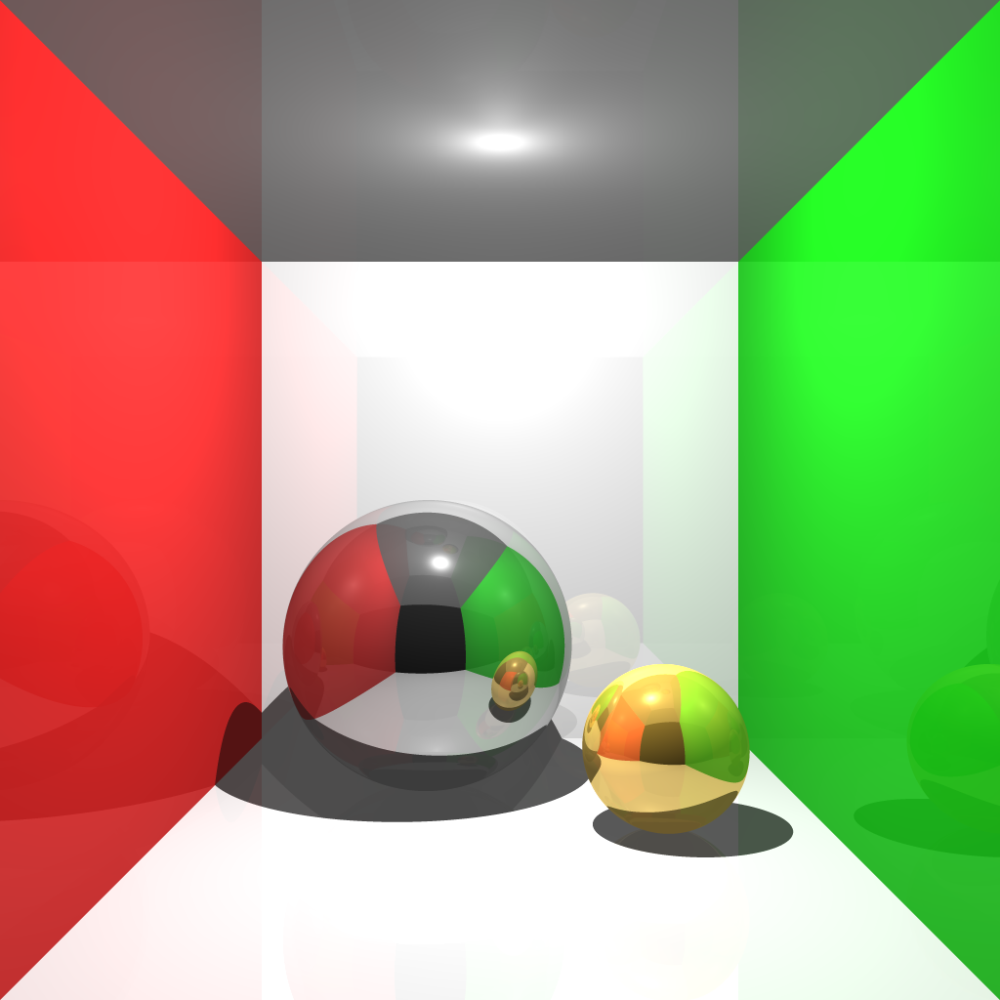
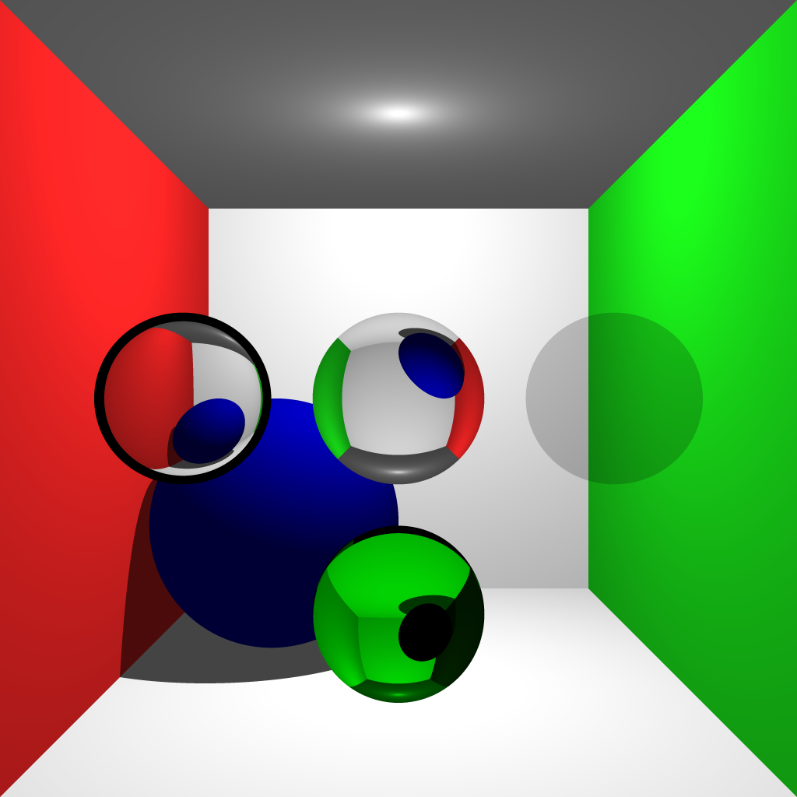
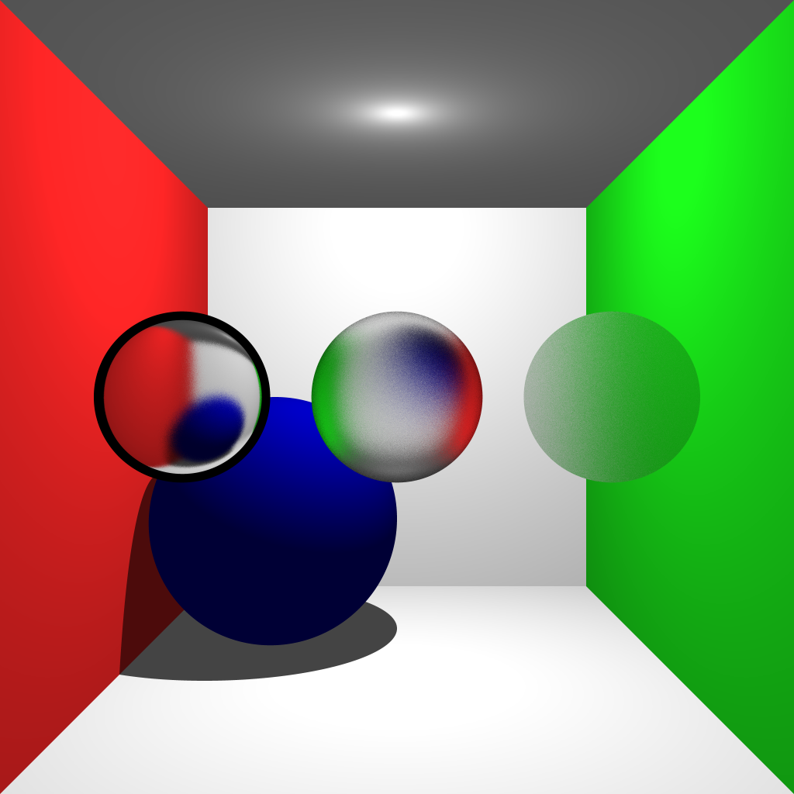
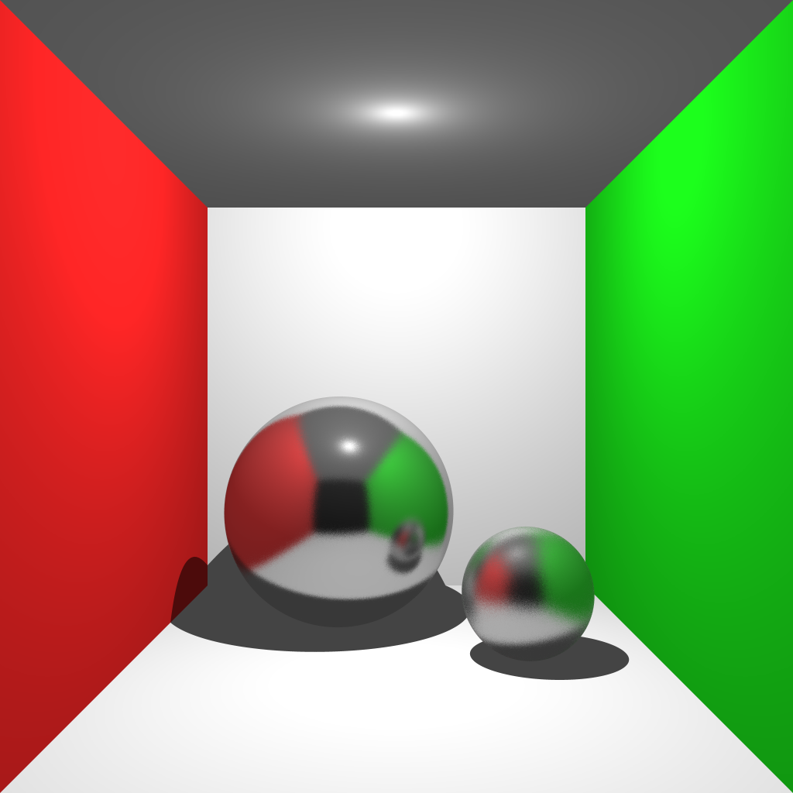
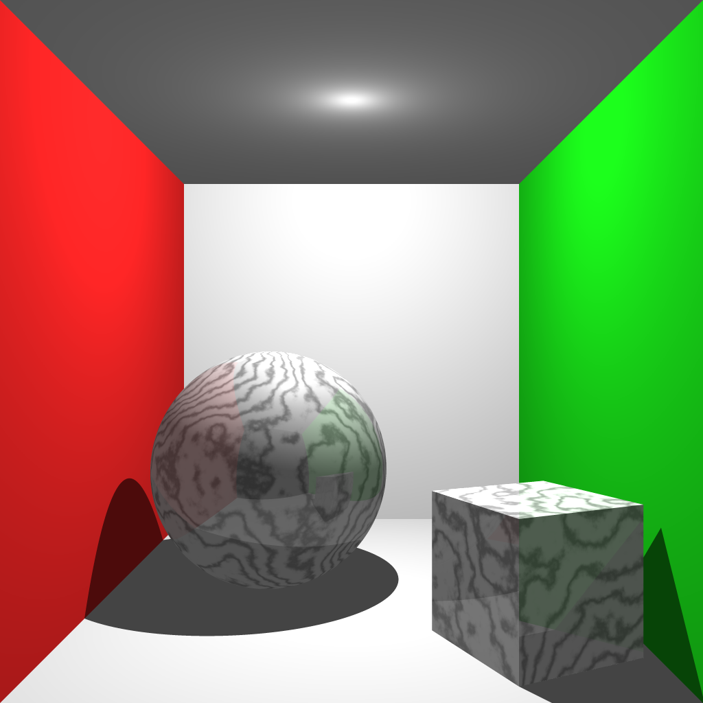
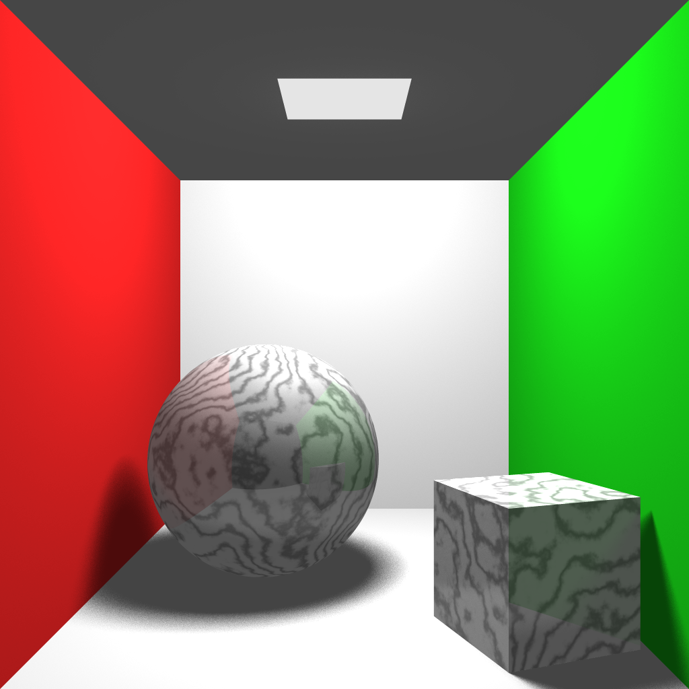
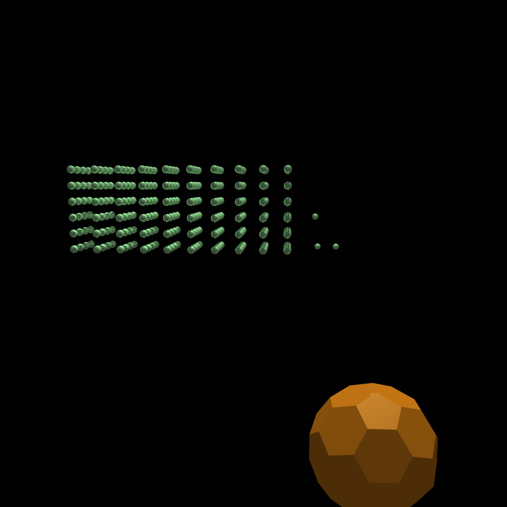
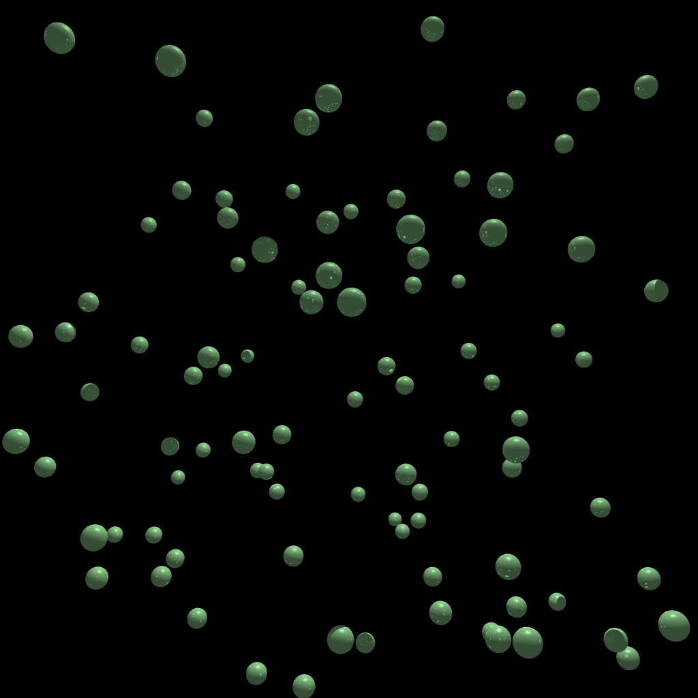

Objectives
The extra objective I completed in A4 was regular sampling anti-aliasing.
Texture Mapping
Implemented for meshes by using the barycentric coordinates calculated during the Möller–Trumbore algorithm to compute UV coordinates. Bilinear interpolation was used for determining pixel color.
Bump (Normal) Mapping
Implemented for meshes as well. Normals are looked up in a normal map texture in a similar process to texture mapping and bilinearly interpolated to get the intersection normal. Matrices are precomputed to transform the normals in the map from tangent space to local space for every face of the mesh. The bilinearly interpolated normal is then transformed to model space where it is treated as the new intersection normal. The effect is that the normals defined in the normal map are purturbances of the already existing normals of the model.
Reflection
For every intersection point, a secondary reflection ray is calculated using the ggreflection formula shown in class. The color from that is then multiplied by the specular reflection constants and added to the color output.
Refraction
For every intersection point, a secondary transmission ray is calculated using the ggrefraction formula shown in class which takes into account the index of refraction of the material. The percentage of light that a material allows to pass through it is defined by a transmissivness constant. The color of the light passing through a material is determined by the complement of the specular color.
Glossy Transmission
A transmitted ray is calculated and new transmissive rays are sampled in a cosine distrobution around it. The number of these rays is configurable.
Glossy Reflection
A reflected ray is calculated and new reflective rays are sampled in a cosine distrobution around it. The number of these rays is configurable.
Phong Shading
Implmented for meshes. Normals from each vertex of the intersected face are weighted by their barycentric coordinates to calculate a new normal for the intersection.

Perlin Noise (Solid Texturing)
A three dimentional grid of gradients were generated where the gradients are uniformly distributed over a unit sphere. From here, for any given collision points we calculate the dot product between the distance vectors to the 8 nearest corners in the grid and the gradients are their respective corners. These represent "influence" values. We then interpolate these from the by linearly interpolating accross all 3 axis. We can do this for varying sizes of grid to create more "turbulence" (by default perlin Noise has a fairly uniform scaling). By then feeding the turrbulence and intersection coordinates into a sine function, we can mimic the viens of marble. A fade function is also applied to each component of the intersection coordinate to provide a smoother transition between gradients.
Soft Shadows
Implemented area lights. For any intersection point, rather than calculating a single shadow ray to a point light, we sample the area light for multiple points, calculate shadow rays to each of these points, and take the average (success rate). This is the brightness from that light source at the intersection point.
Final Scene

Extra Objectives
Bounding Volume Hierarchy
Every primitive is required to define an axis-aligned bounding box (AABB) for itself in model coordinates. All of these bounding boxes are then translated to world coordiantes. From here we can construct a hierarchy using the following steps. Calculate the AABB which encapsulates all AABB's in the scene, This is our current nodes bounding box. Take its longest side and order all primtives base on the midpoint of their AABB. Split this list in half and recurse to make the left and right nodes. Its worth noting that since these are always AABB's, if a rotation is applied when transformed to world coorinates, they may grow a bit (within a bounded limit) such that they are slightly oversized. In the following pictures, using the BVH increased performance from 152.35 to 5.688 seconds and 55.944 to 8.452 seconds respectively. Both tests were run with 4x4 anti aliasing and 4x2 multithreading.
 Parallelization
Implmented using multithreading to calcualte different subsets of the final images pixels. In order to keep the load on each thread roughly equal,
the image was split into non overlapping rectangles (each the area of the number of threads) and each thread would then work on one pixel (always in the
same location relative to the rectangle) in every rectangle. This has the effect of evenly spreading the pixels each thread works on accross the whole image
as much as possible.
The following times were recorded with different multithreading kernel shapes on the bvh2.lua scene:
(Antialiasing was on and set to 4. Max hits are 5. No glossy reflections/refractions or soft shadows)
(1x1): 19.67 s
(2x1): 10.38 s
(3x1): 7.865 s
(4x1): 7.514 s
(2x2): 7.760 s
(3x2): 7.497 s
(4x2): 7.543 s
(3x3): 7.587 s